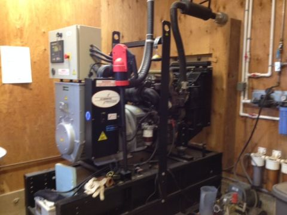
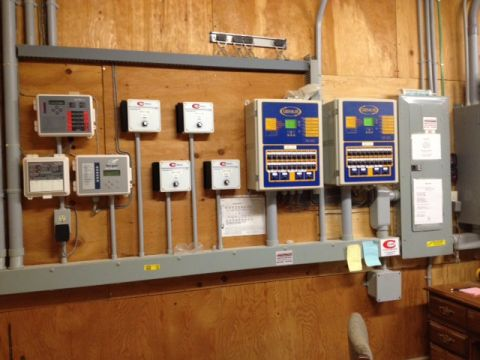
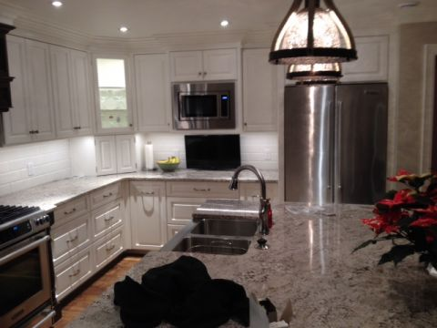
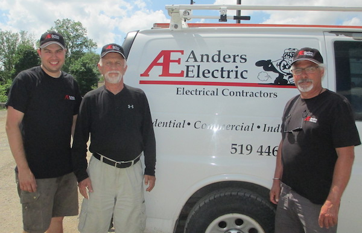

Industrial
Machinery installations, maintenance and electrical repairs for factories and warehouses.
Industrial servicesElectrical work for homes, farms and industry across Brant, Norfolk and Haldimand Counties.
Contact Anders
Machinery installations, maintenance and electrical repairs for factories and warehouses.
Industrial services
Lighting, wiring and service upgrades for businesses, farms and greenhouses.
Commercial services
Panel upgrades, renovation wiring and standby power for your home.
Residential services
When Waterford Electric founder Paul Hrvoyevich retired in 2018, his team joined Anders Electric. Today our Waterford office looks after electrical work throughout Brant, Norfolk and Haldimand Counties.
About Anders ElectricBased in Waterford, we serve Brantford, Paris, Simcoe, Waterford, Delhi, Ancaster, Caledonia, Ohsweken, Woodstock, Tillsonburg, Norwich, Courtland, Port Rowan and Port Dover.
For an estimate or a service visit, tell us where the work is and what you need.
Monday to Friday, 8 am to 5 pm
Emergency calls answered 24/7, including holidays.